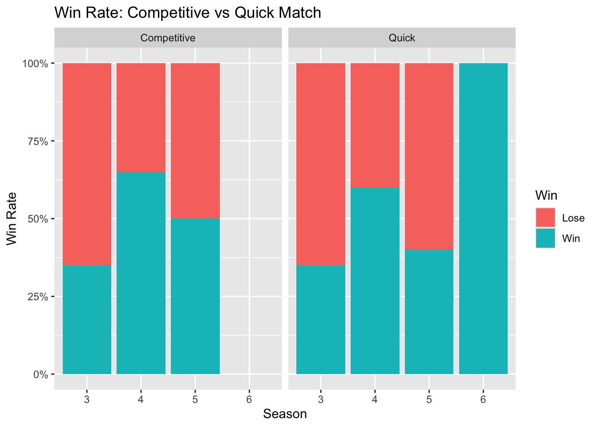
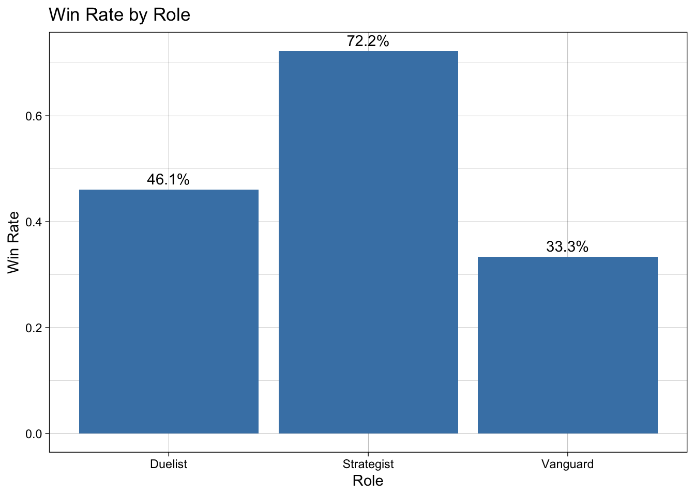
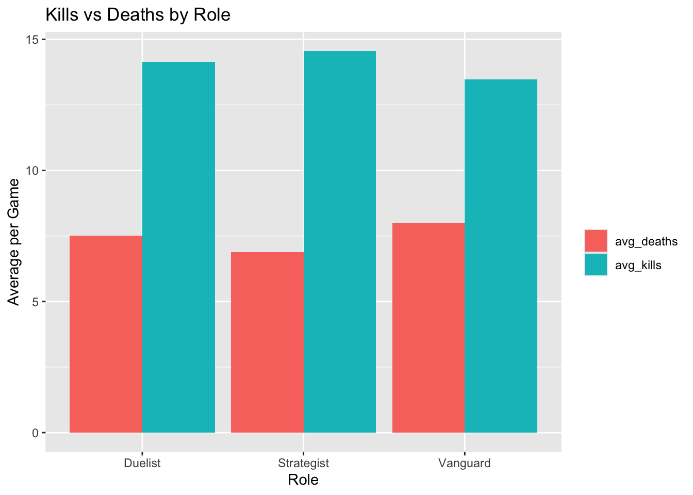
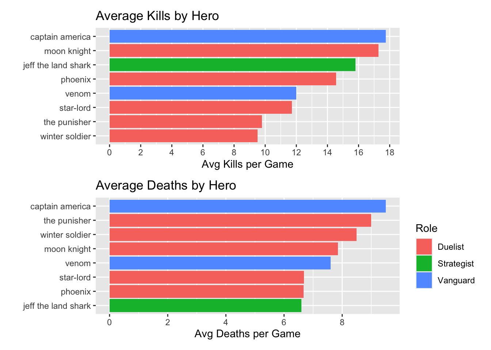
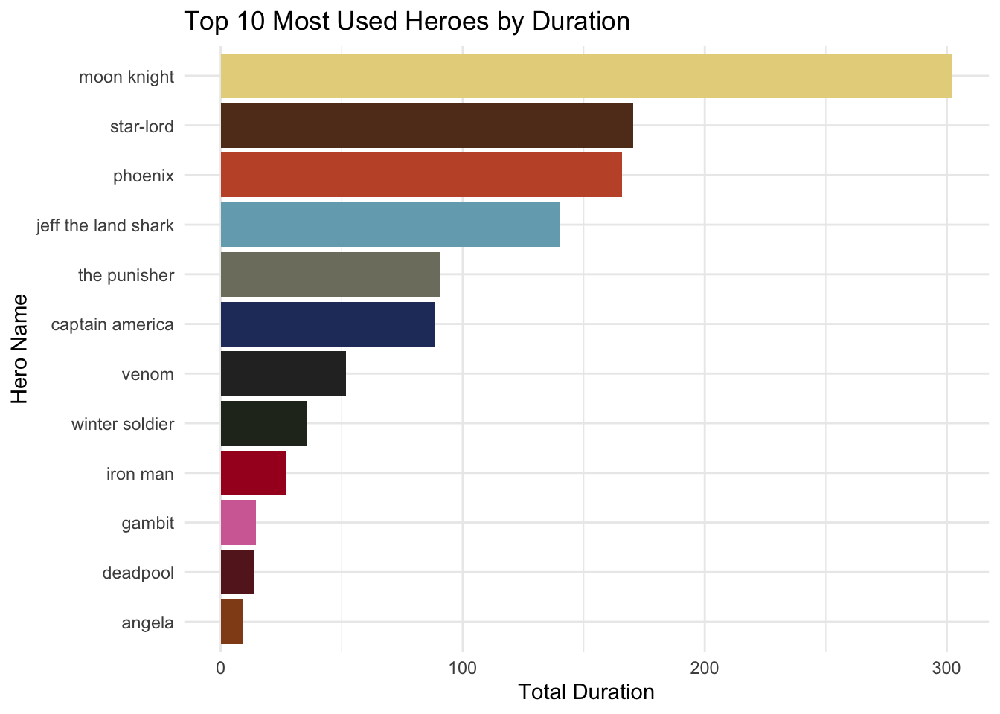
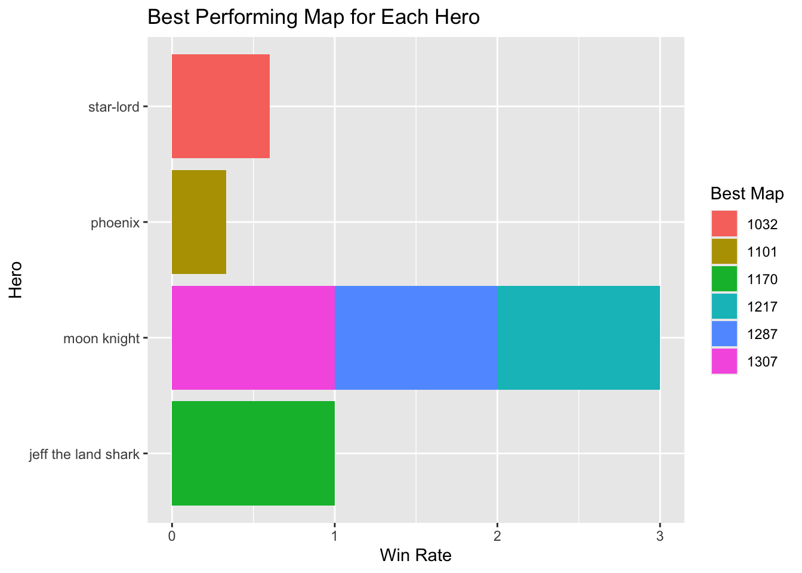
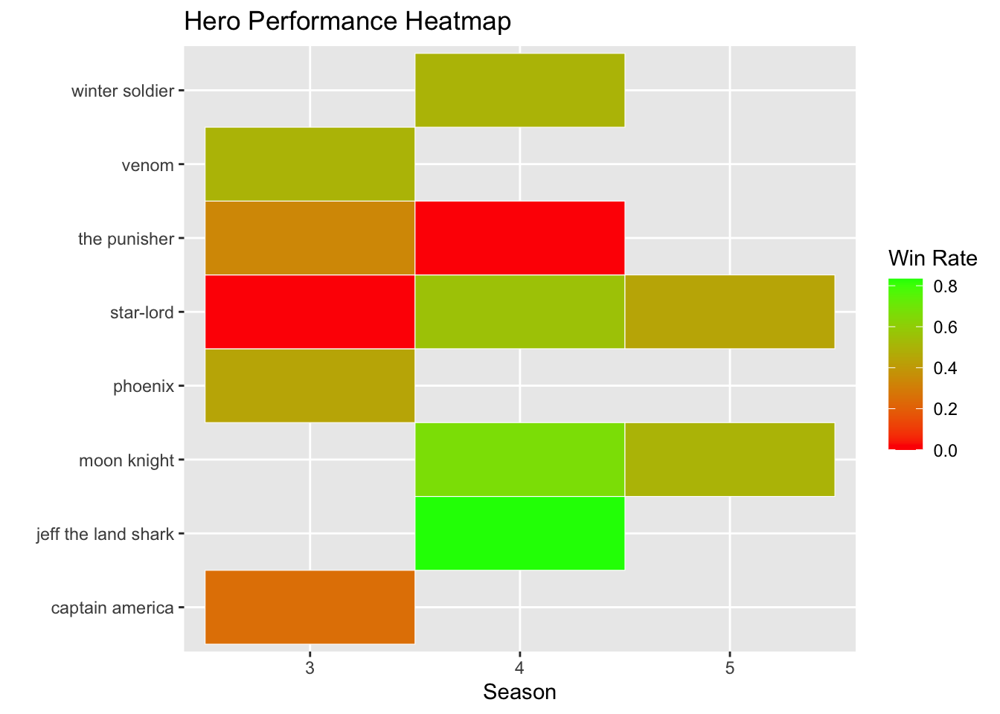

library(tidyverse)
library(here)
library(dplyr)
library(ggimage)
library(patchwork)Marvel Rivals Exploration
Drafting Vizualization - EDS 240
- Restate the questions you hope to answer with your inforgraphic. This should include one overarching question (think of this as driving the overall theme of your infographic) and at least three subquestions (each of which will be addressed by your infographic’s component visualizations). Have these questions changed at all since FPM #1? If yes, how so?
- Overall Question: Am I mastering Marvel Rivals? How can I optimize my Marvel Rivals gameplay?
- Sub-questions:
- Which role should I main? (role, win_rate, hero_name)
- Should I focus on Competitive or Quick Match? (mode, win_rate, kd_ratio)
- Am I improving across seasons or plateauing? (season, win_rate, duration)
- Which maps favor my best heroes? (map_id, hero_name, win_rate) Yes from FPM 1, my questions and data have switched. I was able to get an API for my account on the video game I play called Marvel Rivals.
- Explain which variables from your data set(s) you will use to answer the above questions, and how.
- The variables I intend to use are
- “map_id”, “map” = Same thing, map just has a total count of map_id
- “duration” = Time spend on each match
- “season” = Seasons 3-6
- “mode” = Competitive or Quick Play Match
- “kills”, “deaths”= Get averages, and combine with hero or hero type
- “hero_name”, “role” = Hero names and types (duelist, stragestist, vanguard)
- “total_hero_damage”, “total_damage_taken”, “total_hero_healing” = Still debating too use
- “win_rate” = Combine with heroes or maps to see which ones I have done better in
Data Viz - Examples to use for my infographic
I think all of these are great and have an idea on how i would like to incorprate them onto some visuals that I will make. I am thinking to add maps and add in the heroes I am best on each map. As well as I can have kill/death average with a picture of the top five character in the middle similar to the pokemon one .
Part 6
- What are the key insights you want your infographic to communicate, and how will your design choices help highlight and support those messages?
- I would like to demonstrate what the game, maybe a simple walk through. There is a team of 5 that can be used to have as many roles (duelist, strategist, vanguard), maybe show a picture or have a group of characters at the top and add labels to them. Then I would like to show my progress in two type of game modes, competitive where ranks can be achieved faster, the higher the rank the better one gets with a specific hero and Quick match is more of a chill gameplay, where it doesn’t hurt your rank but rather lets you practice with others.
- Following this I would like to showcase which hero I get more kills/ death on average to see if I should out-rank and become lord or try other characters.
- Lastly, I woul like to show my win rate with the three types of duelist, strategist, or vangaurd.
What challenges did you encounter or anticipate encountering as you continue to build / iterate on your visualizations in R? If you struggled with mocking up any of your three visualizations, describe those challenges here. I realized that not all my matches made it to the csv. It seems like the data on the csv or retrieved from the API, only counts matches where I only played as one character not counting when I would switched heroes. As well as the ranks aren’t list, it would’ve been a great way to demonstrate the ranks of each hero character I played throughout the seasons. I attempted at adding an image to the characters but that didn’t work out. As well as I got the inspiration from the pokemon infographic and will try to do that with Kill/death average. Some of the visuals I already had and created new ones for the new subquestions I added. Just need to dial down some of the questions and refine my visuals.
What ggplot extension tools / packages do you need to use to build your visualizations? Are there any that we haven’t covered in class that you’ll be learning how to use for your visualizations? I used ggimage and patchwork for now. Not necessarily any packages that we used in class.
What feedback do you need from the instructional team and / or your peers to ensure that your intended message and key insights are clear? If my overall question is good, to narrow down my subquestions. I feel like once I get the green light I will be able to refine and create more awesome visuals, right now they’re pretty basic and standard.
Read Data


clean_season <- read_csv(here('data','clean_season.csv'))Data Wrangle
clean_season <- clean_season %>%
group_by(map_id) %>%
mutate(map_total = n()) %>%
ungroup()
# Progress by hero across seasons
hero_season_progress <- clean_season %>%
group_by(hero_name, season) %>%
summarise(
games = n(),
win_rate = mean(win_rate == "Win")
) %>%
filter(games > 2) # Only heroes with 3+ games per season`summarise()` has regrouped the output.
ℹ Summaries were computed grouped by hero_name and season.
ℹ Output is grouped by hero_name.
ℹ Use `summarise(.groups = "drop_last")` to silence this message.
ℹ Use `summarise(.by = c(hero_name, season))` for per-operation grouping
(`?dplyr::dplyr_by`) instead.role_kd_summary <- clean_season %>%
group_by(role) %>%
summarise(
total_kills = sum(kills),
total_deaths = sum(deaths),
avg_kills = mean(kills),
avg_deaths = mean(deaths),
kd_ratio = sum(kills) / sum(deaths),
games = n()
)
role_kd_summary# A tibble: 3 × 7
role total_kills total_deaths avg_kills avg_deaths kd_ratio games
<chr> <dbl> <dbl> <dbl> <dbl> <dbl> <int>
1 Duelist 1258 668 14.1 7.51 1.88 89
2 Strategist 262 124 14.6 6.89 2.11 18
3 Vanguard 202 120 13.5 8 1.68 15# Side-by-side kills vs deaths
role_long <- role_kd_summary %>%
select(role, avg_kills, avg_deaths) %>%
pivot_longer(cols = c(avg_kills, avg_deaths),
names_to = "stat", values_to = "value")
# K/D summary by role AND hero
hero_kd_summary <- clean_season %>%
group_by(role, hero_name) %>%
summarise(
total_kills = sum(kills),
total_deaths = sum(deaths),
avg_kills = mean(kills),
avg_deaths = mean(deaths),
kd_ratio = sum(kills) / sum(deaths),
games = n(),
.groups = "drop"
) %>%
filter(games >= 3) # Only heroes with 3+ games
# Map performance by hero (filter maps with 3+ games)
map_hero_performance <- clean_season %>%
group_by(map_id, hero_name) %>%
summarise(
games = n(),
win_rate = mean(win_rate == "Win")
) %>%
filter(games >= 3) # Only include map+hero combos with 3+ games`summarise()` has regrouped the output.
ℹ Summaries were computed grouped by map_id and hero_name.
ℹ Output is grouped by map_id.
ℹ Use `summarise(.groups = "drop_last")` to silence this message.
ℹ Use `summarise(.by = c(map_id, hero_name))` for per-operation grouping
(`?dplyr::dplyr_by`) instead.# See if you have enough data
map_hero_performance# A tibble: 11 × 4
# Groups: map_id [9]
map_id hero_name games win_rate
<dbl> <chr> <int> <dbl>
1 1032 jeff the land shark 4 0.5
2 1032 star-lord 5 0.6
3 1101 phoenix 6 0.333
4 1170 jeff the land shark 3 1
5 1217 moon knight 4 1
6 1287 moon knight 4 1
7 1307 moon knight 3 1
8 1309 moon knight 4 0
9 1309 star-lord 4 0
10 1317 moon knight 3 0
11 2041 star-lord 4 0 # Winning rate across seasons
season_progression <- clean_season %>%
group_by(season) %>%
summarise(
games = n(),
win_rate = mean(win_rate == "Win"))
ggplot(season_progression, aes(x = factor(season), y = win_rate, group = 1)) +
geom_line() +
geom_point(size = 3) +
labs(x = "Season", y = "Win Rate", title = "Win Rate by Season")
# Win rate by season and mode
ggplot(clean_season, aes(x = factor(season), fill = factor(win_rate))) +
geom_bar(position = "fill") +
facet_wrap(~mode) +
scale_y_continuous(labels = scales::percent) +
labs(x = "Season", y = "Win Rate",
title = "Win Rate: Competitive vs Quick Match",
fill = "Win")
# Win rate by role
role_stats <- clean_season %>%
group_by(role) %>%
summarise(
games = n(),
win_rate = mean(win_rate == "Win"))
# Bar Chart - Win Rate by Roles
ggplot(role_stats, aes(x = role, y = win_rate)) +
geom_col(fill = "steelblue") +
geom_text(aes(label = paste0(round(win_rate*100, 1), "%")), vjust = -0.5) +
labs(x = "Role", y = "Win Rate", title = "Win Rate by Role")+
theme_linedraw()
Average K/D By Role
# Kill and Death Averages by Roles
ggplot(role_long, aes(x = role, y = value, fill = stat)) +
geom_col(position = "dodge") +
labs(x = "Role", y = "Average per Game",
title = "Kills vs Deaths by Role", fill = "")
Draft - For final visual add character image and around character image will be kills/deaths avg
# Kills by hero, grouped by role
# Plot 1: Average Kills
p1 <- ggplot(hero_kd_summary, aes(x = reorder(hero_name, avg_kills), y = avg_kills, fill = role)) +
geom_col() +
coord_flip() +
scale_y_continuous(breaks = seq(0, max(hero_kd_summary$avg_kills) + 1, by = 2))+
labs(x = "",
y = "Avg Kills per Game",
title = "Average Kills by Hero")+
theme(
legend.position = "none" )
# Plot 2: Average Deaths
p2 <- ggplot(hero_kd_summary, aes(x = reorder(hero_name, avg_deaths), y = avg_deaths, fill = role)) +
geom_col() +
coord_flip() +
scale_y_continuous(breaks = seq(0, max(hero_kd_summary$avg_deaths) + 1, by = 2))+
labs(x = "",
y = "Avg Deaths per Game",
title = "Average Deaths by Hero", fill = "Role")+
theme(
legend.position = c( "right")
)
# View Together
p1 / p2
Maybe use- Undecided yet
# Palette for Character
my_colors <- c("moon knight" = "#E6D38A",
"star-lord" = "#603920",
"phoenix" = "#C45534",
"jeff the land shark" = "#75AABC",
"the punisher" = "#7D7E6D",
"captain america" = "#263969",
"venom" = "#2C2C2C",
"winter soldier" = "#292F24",
"iron man" = "#A70124",
"gambit" = "#D36DA4",
"deadpool" = "#641D22",
"angela" = "#924B1B")
hero_usage <- clean_season %>%
group_by(hero_name, hero_type) %>%
summarise(
total_duration_min = sum(duration, na.rm = TRUE),
total_duration_hours = round(sum(duration, na.rm = TRUE) / 60, 2)
) %>%
arrange(desc(total_duration_min))`summarise()` has regrouped the output.
ℹ Summaries were computed grouped by hero_name and hero_type.
ℹ Output is grouped by hero_name.
ℹ Use `summarise(.groups = "drop_last")` to silence this message.
ℹ Use `summarise(.by = c(hero_name, hero_type))` for per-operation grouping
(`?dplyr::dplyr_by`) instead.top_heroes <- hero_usage %>%
slice_max(order_by = total_duration_min, n = 10)
# Then plot with hours
ggplot(top_heroes, aes(
x = reorder(hero_name, total_duration_min),
y = total_duration_min,
fill = hero_name
)) +
geom_col() +
scale_fill_manual(values = my_colors) +
coord_flip() +
labs(
title = "Top 10 Most Used Heroes by Duration",
x = "Hero Name",
y = "Total Duration (hours)",
fill = ""
) +
theme_minimal() +
theme(legend.position = "none")# Character USAGE
hero_usage <- clean_season %>%
group_by(hero_name, hero_type) %>%
summarise(total_duration = sum(duration, na.rm = TRUE)) %>%
arrange(desc(total_duration))`summarise()` has regrouped the output.
ℹ Summaries were computed grouped by hero_name and hero_type.
ℹ Output is grouped by hero_name.
ℹ Use `summarise(.groups = "drop_last")` to silence this message.
ℹ Use `summarise(.by = c(hero_name, hero_type))` for per-operation grouping
(`?dplyr::dplyr_by`) instead.top_heroes <- hero_usage %>%
slice_max(order_by = total_duration, n = 10)
# Palette for Character
my_colors <- c("moon knight" = "#E6D38A",
"star-lord" = "#603920",
"phoenix" = "#C45534",
"jeff the land shark" = "#75AABC",
"the punisher" = "#7D7E6D",
"captain america" = "#263969",
"venom" = "#2C2C2C",
"winter soldier" = "#292F24",
"iron man" = "#A70124",
"gambit" = "#D36DA4",
"deadpool" = "#641D22",
"angela" = "#924B1B")
ggplot(top_heroes, aes(
x = reorder(hero_name, total_duration),
y = total_duration,
fill = hero_name # map fill to hero_name
)) +
geom_col() +
scale_fill_manual(values = my_colors) + # supply your palette here
coord_flip() +
labs(
title = "Top 10 Most Used Heroes by Duration",
x = "Hero Name",
y = "Total Duration",
fill = ""
) +
theme_minimal() +
theme(legend.position = "none")
best_maps <- map_hero_performance %>%
group_by(hero_name) %>%
slice_max(win_rate, n = 1)
ggplot(best_maps, aes(x = hero_name, y = win_rate, fill = as.factor(map_id))) +
geom_col() +
coord_flip() +
labs(x = "Hero", y = "Win Rate", fill = "Best Map",
title = "Best Performing Map for Each Hero")
# Heatmap version (shows all at once)
ggplot(hero_season_progress, aes(x = factor(season), y = hero_name, fill = win_rate)) +
geom_tile(color = "white") +
scale_fill_gradient(low = "red", high = "green") +
labs(x = "Season", y = "", fill = "Win Rate",
title = "Hero Performance Heatmap")